flowchart LR
A[Gestor de Memòria] --> B[Molts processos]
B --> C[Ubicats a Memòria]
C --> D[De forma simultània]
D --> E[S'ha de compartir Memòria física]
Gestió de la Memòria
Unitat 6 · Sistemes Operatius (SO)
Jordi Mateo Fornés
Necessitat de la gestió de la Memòria
Imaginem un sistema operatiu sense cap mecanisme per gestionar la memòria. Quan un programa s’executa, pot executar una instrucció com MOV REG1, 1000, que mou el contingut de la memòria física 1000 a REG1.
En aquesta situació, què passaria si executéssim dos programes simultàniament?
- No podríem tenir dos programes a la memòria simultàniament.
- Si el primer programa executa
MOV REG1, 1000, i després el segon programa executaMOV REG1, 1000, el contingut de la memòria escrita pel primer programa seria sobreescrit pel segon programa. - Això provocaria un comportament erratic i el primer programa no funcionaria correctament.
Una possible solució seria utilitzar memòria secundària i anar fent swapping de la memòria principal a la secundària. Però, això seria molt lent i poc viable.
Gestió de la Memòria
Objectius
- Traducció d’adreces.
- Reubicació de dades.
- Protecció de la Memòria.
- Compartició.
Funcionalitats
- Mòdul que gestiona el mapa de Memòria de cada procés i les seves regions.
- Mòdul que reparteix la Memòria física disponible entre els processos existents.
Què és el mapa de Memòria?
El mapa de memòria d’un procés és una representació lògica de com la memòria està organitzada per a un programa en execució. Normalment conté diferents regions o segments que es creen a partir de la seva execució.
Què és una regió?
Una zona contigua de memòria amb un punt inicial i una mida definida.
- Suport a la regió: Es guarda el contingut inicial de la regió.
- Fitxer: Regió guardada en un fitxer.
- Anònima: Sense suport.
- Ús: Privat, Compartit entre processos.
- Protecció: Lectura, Escriptura, Execució.
- Mida: Fixa o variable.
Regions del mapa de Memòria?
- Codi: Regió compartida de lectura i execució. Mida fixa. Conté el codi del programa.
- Dades inicialitzades: Regió privada on cada procés té una còpia pròpia de les variables. Lectura, escriptura i mida fixa. Conté variables globals, estàtiques i inicialitzades.
- Dades no inicialitzades: Regió privada de lectura i escriptura. Mida fixa.
- Heap: Regió privada de lectura i escriptura. Mida variable. Aquesta regió creixarà amb l’assignació dinàmica de memòria i decreixerà amb la seva alliberació. Normalment, creix cap a les direccions més altes del mapa.
- Stack: Regió privada de lectura i escriptura. Mida variable. Aquesta regió creixerà amb les crides a funcions, i decreixerà quan aquestes retornin. Normalment, creix cap a les direccions més baixes del mapa.
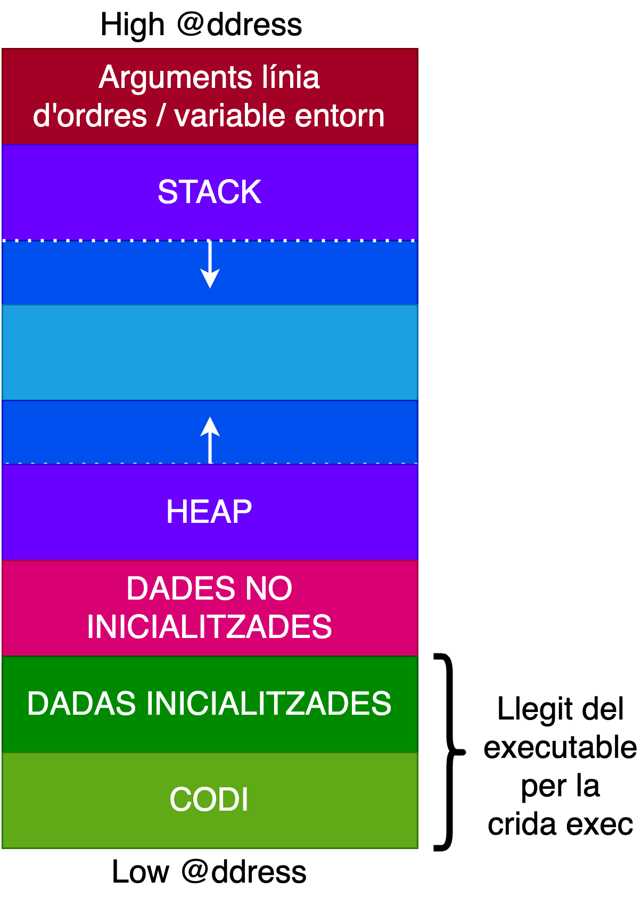
Observacions (I)
Suposem que tenim un programa que realitza la multiplicació de dues matrius. Aquestes matrius s’introdueixen per teclat en temps d’execució, i el programa no pot determinar la mida de les matrius fins que l’usuari les introdueixi. Per tant, necessitem un model de memòria dinàmic.
Suposem que el programa necessita emmagatzemar dades d’un fitxer que no es coneix prèviament. En aquest cas, el sistema operatiu pot crear noves regions en el mapa de memòria per aquestes dades a mesura que el procés llegeix el fitxer, adaptant-se dinàmicament a la demanda.
Observacions (II)
A més, els SOs utilitzen biblioteques dinàmiques que impliquen la creació de regions associades a la mateixa i que contenen les diferents seccions de la biblioteca (codi i dades globals). Per exemple, quan carreguem una biblioteca dinàmica comuna, el sistema operatiu pot crear noves regions en el mapa de memòria del procés per al codi executable i les variables globals de la biblioteca.
Els Sistemes Operatius ofereixen un model de memòria dinàmic i necessiten mantenir una taula de regions per cada procés format per un nombre variable de regions que es poden afegir o eliminar durant la seva execució.
Ex: Memòria d’un procés (I)
#include <stdio.h>
#include <stdlib.h>
#include <unistd.h>
int global;
int
main(int argc, char **argv) {
int private;
(void) printf("argc at : 0x%12lX\n", (unsigned long)&argc);
(void) printf("argv at : 0x%12lX\n", (unsigned long)&argv);
(void) printf("private at: 0x%12lX\n", (unsigned long)&private);
(void) printf("global at : 0x%12lX\n", (unsigned long)&global);
(void) printf("main at : 0x%12lX\n", (unsigned long)&main);
return EXIT_SUCCESS;
}Ex: Memòria d’un procés (II)
void f() {
int stackVar = 42;
printf("stackVar at: 0x%p\n", (void*)&stackVar);
int* heapVar = malloc(4);
printf("Malloced Area Begins at: 0x%p\n", (void*)heapVar);
printf("Malloced Area Ends at: 0x%p\n", (void*)(heapVar + 1));
free(heapVar);
}
void main() {
int mainVar = 0;
printf("Stack Frame of main at: 0x%p\n", (void*)&mainVar);
f();
printf("End of Stack Frame: 0x%p\n", (void*)&mainVar);
}Quins tipus d’adreces existeixen?
Espai lògic d’un procés (Relatives): Adreces de la memòria que contenen el codi, les dades (inicialitzades i no inicialitzades) i la pila del procés. Aquest espai es crea en el moment d’execució del programa. Per exemple, una variable pot ser referenciada com a 10 bytes des de l’inici de les dades.
Espai físic d’un procés (Absolutes): Adreces de la memòria on es carrega l’espai lògic del procés. Aquestes adreces són les adreces reals a la memòria física on resideixen el codi, les dades i la pila del procés. Quan el sistema operatiu carrega un programa a la memòria RAM, l’espai lògic d’aquest procés es mapeja a adreces físiques específiques, que són les adreces reals on resideixen les instruccions del codi i les dades.
Adreces generades per la CPU (adreces virtuals): Quan un procés executa codi, la CPU genera adreces virtuals (també anomenades adreces lògiques) per accedir a variables, instruccions o la pila. Aquestes adreces no són adreces físiques, sinó referències dins l’espai d’adreces del procés. Aquestes adreces virtuals no poden accedir directament a la memòria RAM; han de ser traduïdes a adreces físiques mitjançant algun mecanisme de reubicació.
Repte: Traducció d’adreces
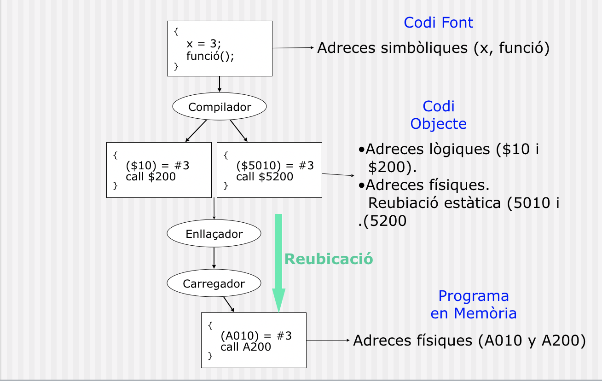
- Adreça simbòlica: etiqueta del codi font (funció X, variable Y)
- Adreça lògica: la que produeix el compilador (offset dins del segment)
- Adreça física: la RAM real, assignada pel carregador o la MMU
Repte del SO: Com es tradueixen les adreces lògiques a físiques?
Repte: Reubicació de la Memòria
Suposem que tenim dos programes carregats en zones de memòria diferents:
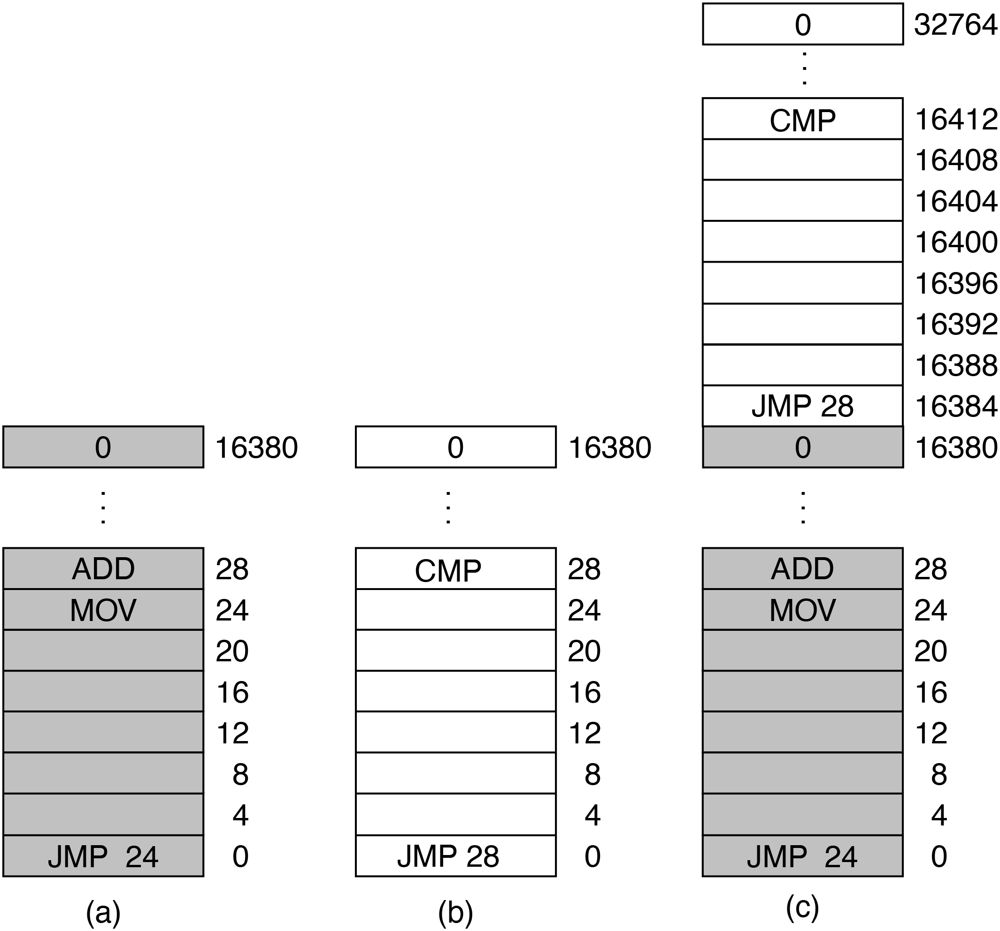
El programa A espera que la instrucció MOV estigui a la posició 24 de la memòria, i el programa B espera que la instrucció CMP estigui a la posició 28 de la memòria. Si no tenim un mecanisme de reubicació de la memòria, les seves expectatives es veuran compromeses. Fixeu-vos que cada programa té la seva zona de 16KB però es poden solapar. Necesitem un mecanisme que ens permeti reubicar la memòria.
Què és la reubicació?
L’espai d’adreçament d’un programa s’ha de reubicar (traduir) segons on el sistema operatiu decideixi carregar-lo a Memòria, sense modificar-ne el comportament. Aquesta traducció pot fer-se en compilació, càrrega o execució.
- Reubicació estàtica en temps de compilació. Les adreces físiques es generen en temps de compilació. El lloc de la Memòria on es carregarà el procés es conegut. Les adreçes que genera el processador (execució) coincideixen amb les @ físiques.
- Reubicació estàtica en temps de càrrega. En carregar un procés en memòria es realitza la traducció d’adreces lògiques a físiques. Si no podem saber on es carregarà el procés, el codi generat pel compilador únicament pot contenir @ lògiques. El carregador farà la traducció @ lògiques a físiques.
- Reubicació dinàmica en temps d’execució. La traducció d’adreces lògiques a físiques es realitza en temps d’execució. Permet que els processos es puguin moure d’un lloc de Memòria a un altre. Facilita el swapping i la compactació. Alenteix la execució i complica el màquinari.
Reubicació estàtica en temps de compilació
Les adreces físiques del programa es generen durant la compilació. El lloc on el procés s’executarà és conegut i fix.
- El codi conté adreces físiques directes.
- Les adreces que genera la CPU durant l’execució coincideixen amb les adreces físiques.
- No permet moure el procés ni protegir-lo.
- Avui dia pràcticament no s’utilitza.
Reubicació estàtica en temps de càrrega
El programa conté adreces lògiques.
- Quan el SO carrega el procés en memòria:
- El loader substitueix les adreces lògiques per adreces físiques, segons on decideixi ubicar el procés.
- La traducció es fa una sola vegada en carregar el programa.
- Durant l’execució, la CPU utilitza adreces ja reubicades.
- El procés no pot canviar de posició un cop carregat.
Reubicació dinàmica temps execució
La CPU genera sempre adreces virtuals. La traducció a adreces físiques es fa cada vegada que hi ha un accés a memòria, per hardware:
- Amb un règim simple: registre base + registre límit.
- O amb una MMU: paginació, segmentació, TLB, proteccions.
Avantatges
- Els processos es poden moure a memòria (compactació, swapping).
- Permet implementar memòria virtual, protecció, COW, mapatge de fitxers, etc.
Inconvenients
- Necessita suport hardware (MMU).
- Hi ha un cost per accés (mitigat pel TLB).
Exemple de reubicació de la Memòria
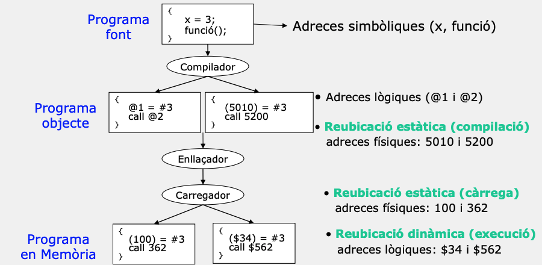
Mecanismes de protecció
- El sistema de gestió de memòria ha de garantir la protecció del codi i les dades dels processos contra accessos accidentals o malintencionats d’altres processos.
- Es requereix la verificació en temps d’execució de totes les referències a la memòria generades per un procés.

Protecció a nivell de pàgina
Cada pàgina del procés té associats diversos bits de protecció dins la seva Page Table Entry (PTE):
- R (Read) — permet lectura
- W (Write) — permet escriptura
- X (Execute) — permet execució de codi
- U/S (User/Supervisor) — indica si la pàgina és accessible des de mode usuari
- A (Accessed) — marcat quan s’ha accedit
- D (Dirty) — marcat quan s’ha modificat
Exceptions per page fault
Quan la CPU accedeix a una adreça virtual:
- La MMU busca la PTE corresponent.
- Si l’accés no compleix els permisos (p. ex. escriure en una pàgina R/X), o la pàgina no està present, la MMU genera una page fault exception.
- El control passa al sistema operatiu:
- Si és un page-in (pàgina no present), el SO la carrega de disc i actualitza la PTE.
- Si és un accés il·legal (violació W, X, U/S…), el SO termina el procés (segmentation fault).
Aquest procediment el veurem en detall quan parlem de memòria virtual.
Privilegi de nucli vs. usuari
La CPU funciona en dos modes:
- Mode usuari (ring 3):
- Només pot accedir a pàgines marcades com User (U).
- No pot accedir a memòria del kernel ni modificar taules de pàgines.
- Mode nucli (ring 0):
- Pot accedir a qualsevol pàgina etiquetada com Supervisor (S).
- Gestiona PTEs, TLB flush, interrupcions, drivers…
La protecció per pàgines garanteix que un procés d’usuari no pugui llegir ni modificar memòria del SO.
Mecanismes de compartició
- Hi ha blocs de programes (ja sigui codi o dades) que poden ser compartits entre processos per reduir els requisits de memòria.
- Per permetre la compartició d’un bloc de memòria entre processos, és necessari establir mecanismes de comunicació i sincronització, garantint que diversos processos puguin accedir-hi de manera segura i coherent.
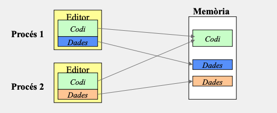
SuperMario Land 2: Glitch
- Quan Mario surt dels límits del nivell en una àrea que aparentment hauria d’estar buida, aquesta zona no està realment desocupada. En realitat, conté dades assignades a altres recursos.
- Manca de mecanismes de protecció de memòria durant l’execució.
- Permet accés il·legal a zones no destinades a ser visibles o utilitzables.
El glitch es produeix perquè l’adreçament directe a la memòria no està subjecte a cap traducció o verificació en temps d’execució, i el motor del joc tracta adreces fora del rang del nivell com a accessibles, interpretant-les erròniament com a dades vàlides.
Sistemes de gestió de la Memòria
Models d’organització de la Memòria física
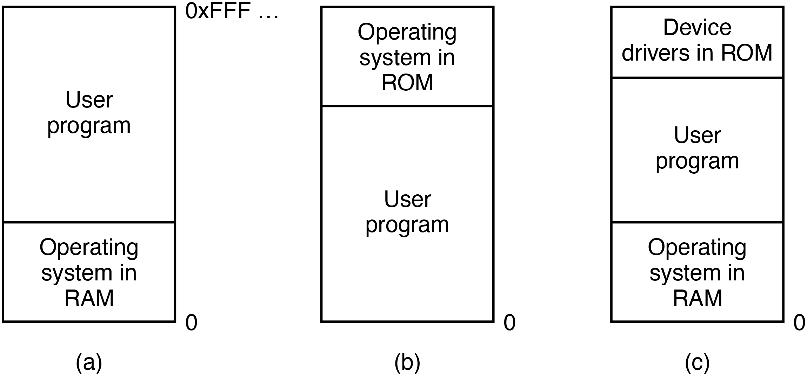- El SO es pot ubicar a la part baixa de la memòria en forma de RAM (Random Access Memory).
- El SO es pot ubicar a la part alta de la memòria en forma de ROM (Read Only Memory).
- El SO es pot ubicar a la part baixa en forma de RAM i els drivers a la part alta en forma de ROM.
Assignació contigua: Màquina nua
- No existeix un sistema de gestió de la Memòria definit.
- L’usuari té control complet de tot l’espai de Memòria.
- L’espai d’adreces lògiques és identic al espai d’adreçament físic.
Avantatges
- Flexible
- Simple
- NO necessita hardware/software específic.
Desavantatges
- Els processos i el kernel del SO comparteixen el mateix espai d’adreçament.
- No existeix protecció.
- Poca eficiència.
Assignació contigua: Monitor resident
- Divideix la Memòria en dues seccions diferents.
- Una àrea de memòria específica pel monitor resident (nucli del SO).
- Es pot situar a la part alta o baixa de la Memòria.
- Una zona per l’usuari, on únicament es pot ubicar un procés.
- El procés d’usuari únicament pot utilitzar adreces de Memòria que no sigui del Monitor.
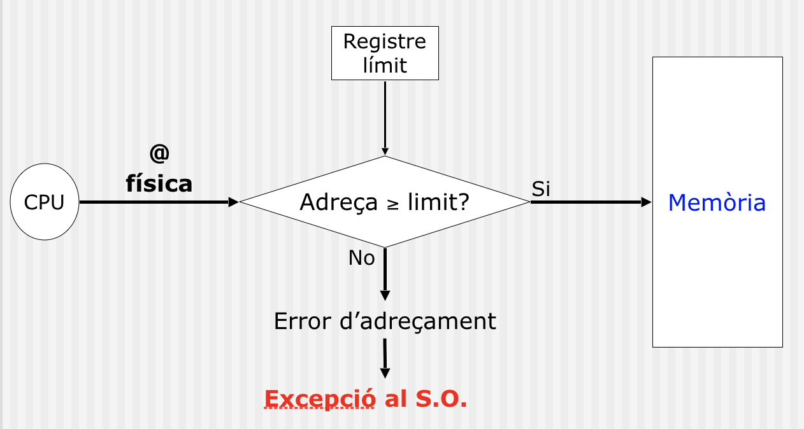
Assignació contigua: Particions múltiples
- La memòria es troba dividida en regions.
- Cada partició pot contenir un procés en execució.
- Quan un procés acaba la seva execució allibera la partició, que pot ser utilitzada per un altre procés de la cua de treballs.
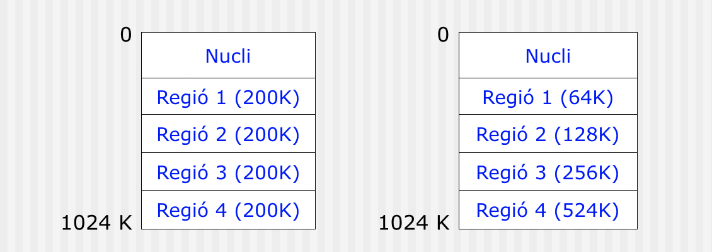
Hardware de protecció de particions múltiples
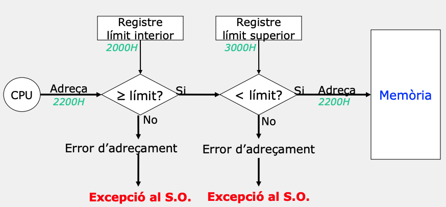Polítiques de selecció de partició
- First-Fit. Seleccionem la primera partició disponible amb espai suficient pel procés.
- Best-fit-only. Seleccionem la partició que millor s’ajusta a la mida del procés. Si esta ocupada, esperem.
- Best-available-fit. Seleccionem la partició que desaprofita menys espai de Memòria.
Una cua
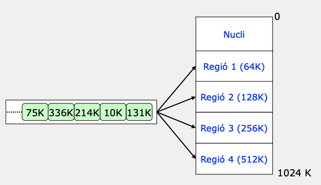
Múltiples cues
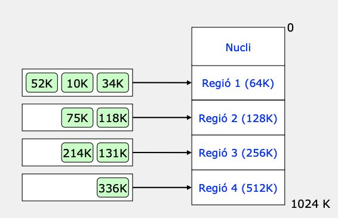
Fragmentació de Memòria
La fragmentació es refereix a les àrees de memòria no utilitzades, i pot ser causada pel tipus de mecanisme de gestió de la memòria.
Interna. Porció de Memòria d’una partició que no utilitza el procés té menys requeriments. Suposem que assignem una partició de memòria de 1000 bytes a un procés, però el procés només necessita 800 bytes. Els 200 bytes restants es considerarien fragmentació interna.
Externa. Es produeix quan existeix espai de Memòria lliure per satisfer els requeriments, però no és contigua i per tant no el podem utilitzar. Imagineu que tenim dues àrees de memòria lliure de 300 bytes cada una, però estan separades per una àrea ocupada de 200 bytes, no podem satisfer una sol·licitud de 500 bytes, tot i que hi ha prou memòria lliure en total.
La fragmentació és un problema que afecta l’eficiència de l’ús de la memòria en els sistemes informàtics.
Exemple: Fragmentació
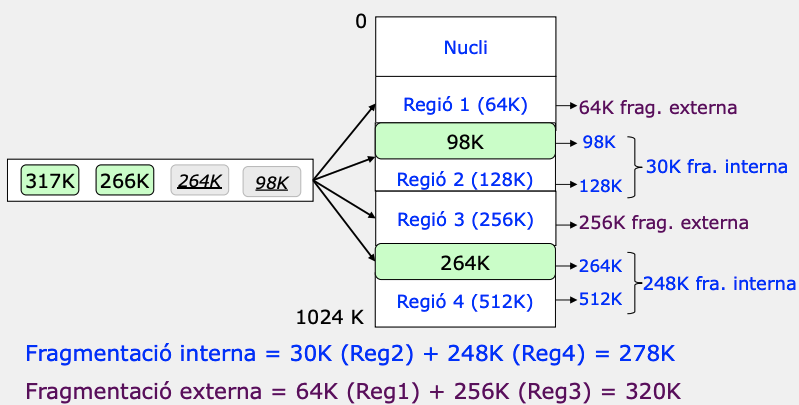
Particions de mida variable
A diferència de les particions de mida fixa, les particions de mida variable permeten que la mida de la partició s’adapti a les necessitats del procés.
Avantatges
- No hi ha fragmentació interna.
- Millor aprofitament de la Memòria.
- Incrementa el nombre de processos que poden estar en Memòria.
Observació
El nombre de processos pot augmentar si es fa compactació periòdica per reduir la fragmentació externa.
Per exemple, si tenim una partició de 100KB i un procés de 50KB, la partició de mida fixa tindrà 50KB de fragmentació interna, mentre que la partició de mida variable tindrà 0KB de fragmentació interna.
Planificació de particions de mida variable

Fragmentació externa en particions de mida variable
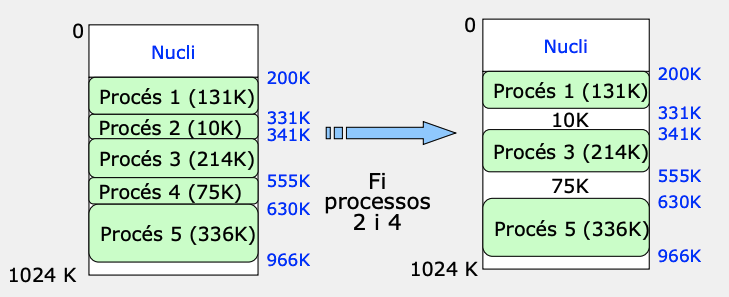
Assignació no contigua: Paginació
La paginació implica que el mapa de Memòria es divideix en pàgines i la Memòria principal es divideix en un marc de pàgines. Un marc de pàgina conté en un moment determinat una pàgina en memòria d’un procés. Aquesta estructura de dades que relaciona pàgines amb marcs es coneix com a taula de pàgines i s’utilitza en la traducció.
Traducció
- L’adreça lògica es descompon en número de pàgina (p) i desplaçament (d) dins de la pàgina.
- Amb el número de pàgina s’indexa en la taula de la pàgina del procés.
- Aquest està ubicat a partir de l’adreça guardada al registre base de taula de pàgines (RBTP).
- Es realitzen els controls d’accessos a la pàgina.
- Es calculen les adreces físiques (a partir de l’índex de la cel·la física multiplica per la mida de pàgina més el desplaçament).
Esquema i Maquinari: paginació
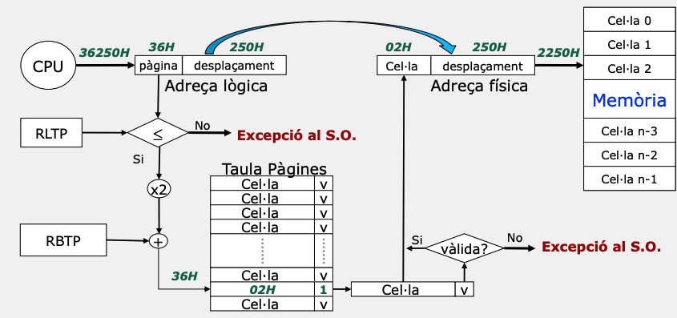
Què representa ×n en aquests diagrames?
El símbol ×n indica que cada entrada d’una taula (segmentació, paginació o similar) ocupa n bytes. Per accedir a una entrada concreta, cal calcular la seva adreça amb: \(\text{adreça_física} = \text{base_taula} + (\text{índex} \times n)\)
Format Taula de pàgines
| cel·la pàgina física | V | R | W | X | M | Ref |
|---|
- V: Entrada vàlida.
- R: Permisos de lectura.
- W: Permisos d’escriptura.
- X: Permisos d’execució.
- M: Pàgina en Memòria Principal.
- Ref: Pàgina referenciada.
Problema 1: Paginació
Enunciat
Disposem d’un sistema de gestió de Memòria paginat amb els paràmetres següents:
- Espai d’adreçament lògic de processos: 2MB.
- Mida Memòria Principal: 128KB.
- Mida pàgina: 4KB.
Calcular:
- Adreça i longitud
- Mida de la taula de pàgines
- Número de cel·les.
Problema 1: Paginació (Solució)
L’adreça lògica és dividida en dues parts: el desplaçament i el número de pàgina.
- Desplaçament: La mida de la pàgina és de 4 KB (\(2^{12}\) bytes), i per representar qualsevol desplaçament a l’interior d’una pàgina, necessitem 12 bits.
- Número de Pàgina: Per a una adreça lògica total de 2 MB (\(2^{21}\) bytes), el número màxim de pàgines és la raó entre l’espai d’adreçament lògic total i el desplaçament (\(\dfrac{2^{21}}{2^{12}}=2^9\)), per tant, requerim 9 bits per representar el número de pàgina.
Problema 1: Paginació (Solució)
L’adreça lògica és dividida en dues parts: el desplaçament i el número de pàgina.
- Mida de la Taula de Pàgines: La mida de la taula de pàgines es determina pel nombre màxim de pàgines que pot tenir un procés. Si l’espai d’adreçament lògic total és de 2 MB, i la mida de la pàgina és de 4 KB, el nombre màxim de pàgines és de 512 (\(\dfrac{2^{21}}{2^{12}}=2^9\)). Per tant, la taula de pàgines tindrà 512 entrades.
- Número de Cel·les de la Memòria: El nombre de cel·les a la memòria es calcula igualment, considerant la mida de la pàgina. Si la mida de la Memòria Principal és de 128 KB, i la mida de la pàgina és de 4 KB, el nombre de cel·les és de 32 (\(\dfrac{2^{17}}{2^{12}}=2^5\)).
Problema 1: Paginació (II)
Quina és l’adreça física de les adreçes lògiques: 015253H, 003204H, 0H, 017253H, 005100H. Quines són vàlides? Assumeix la següent taula de pàgines:
Taula de pàgines
| Index | Cel·la | V |
|---|---|---|
| 0 | 09H | 1 |
| 1 | 01H | 1 |
| 2 | 03H | 0 |
| 3 | 0FH | 1 |
| 4 | 02H | 1 |
| 5 | 0CH | 0 |
| 21 | 0AH | 1 |
| 22 | 05H | 1 |
| 23 | 0DH | 1 |
| 24 | 04H | 0 |
| 25 | 00H | 0 |
Solució
| Adreça lògica | Cel·la | Desplaçament | Adreça física | Vàlida |
|---|---|---|---|---|
| 015253H | ??? | ??? | ??? | ??? |
| 003204H | ??? | ??? | ??? | ??? |
| 0H | ??? | ??? | ??? | ??? |
| 017253H | ??? | ??? | ??? | ??? |
| 005100H | ??? | ??? | ??? | ??? |
Problema 1: Paginació (III)
Donada una adreça lògica amb 9 bits per al número de pàgina i 12 bits per al desplaçament, com ara l’adreça 015253H, podem descomposar-la de la següent manera:
- Número de Pàgina (9 bits):
015253Hen binari:0 0001 0101 0010 0101 0011- El primer 9 bits formen el número de pàgina:
0 0001 0101que en decimal és el 21 (\(2^0+2^2+2^4\)).
- Desplaçament (12 bits):
015253Hen binari:0 0001 0101 0010 0101 0011- Bits del 10 al 21 (de dreta a esquerra):
0010 0101 0011(253H).
Per tant, cercarem la pàgina nº 21 a la taula de pàgines, aquesta entrada conté el número de cel·la 0AH. Per tant, l’adreça física és 0A253H i és vàlida.
Problema 1: Paginació (IV)
Quina és l’adreça física de les adreçes lògiques: 015253H, 003204H, 0H, 017253H, 005100H. Quines són vàlides? Assumeix la següent taula de pàgines:
Taula de pàgines
| Index | Cel·la | V |
|---|---|---|
| 0 | 09H | 1 |
| 1 | 01H | 1 |
| 2 | 03H | 0 |
| 3 | 0FH | 1 |
| 4 | 02H | 1 |
| 5 | 0CH | 0 |
| 21 | 0AH | 1 |
| 22 | 05H | 1 |
| 23 | 0DH | 1 |
| 24 | 04H | 0 |
| 25 | 00H | 0 |
Solució
| Adreça lògica | Cel·la | Desplaçament | Adreça física | Vàlida |
|---|---|---|---|---|
| 015253H | 0AH | 253H | 0A253H | Sí |
| 003204H | 0FH | 204H | 0F204H | Sí |
| 0H | 09H | 0H | 09000H | Sí |
| 017253H | 0DH | 253H | 0D253H | Sí |
| 005100H | 0CH | 100H | 0CH10H | No |
Anàlisi de la paginació
Assumeix que tenim un sistema on la mida de la pàgina és de 4 KB. Si un procés ocupa 10 KB de memòria, aquest s’allotjarà en tres pàgines (4 KB + 4 KB + 2 KB). Això implica que el procés ocuparà 3 cel·les de la Memòria Principal. Si el procés necessita 10 KB de memòria, però la mida de la pàgina és de 8 KB, el procés s’allotjarà en dues pàgines (8 KB + 2 KB). Això implica que el procés ocuparà 2 cel·les de la Memòria Principal. Per tant:
La paginació no evita la fragmentació interna, però la redueix.
Característiques de la paginació
La paginació és una tècnica de gestió de memòria que presenta certes característiques:
Eliminació de la Fragmentació Externa: Cada pàgina pot ser assignada independentment, permetent a les pàgines ser ubicades en qualsevol ordre a la memòria física. Això elimina la dependència de tenir àrees contigües per allotjar processos.
Fragmentació Interna: Tot i que elimina la fragmentació externa, la paginació pot introduir fragmentació interna, ja que l’última pàgina pot no estar plena. Aquest espai no utilitzat dins de l’última pàgina indueix a fragmentació interna.
Transparència a l’Usuari: Aquest esquema de gestió de memòria és totalment transparent a l’usuari. L’usuari no necessita saber res sobre la paginació.
Taula de Pàgines per Procés: Es necessita mantenir una taula de pàgines per a cada procés per gestionar la traducció d’adreces lògiques a adreces físiques.
Observacions sobre la paginació
La paginació elimina la fragmentació externa des del punt de vista del procés. Tanmateix, en implementacions modernes pot aparèixer una certa fragmentació al gestor de frames (buddy allocator), tot i que molt menor que en particions variables.
Segmentació
La segmentació és un mètode de maquinari que intenta donar suport a les regions. Considera el mapa de memòria d’un procés com un conjunt de segments. Cada regió es guarda en un segment diferent. El maquinari del gestor necessita una taula de segments. Una direcció lògica es forma per un número de segment i una direcció dins del segment. La traducció consisteix a accedir al número de segment i utilitzar els registre base i límit per comprovar que l’entrada és correcta.
Observacions
- Obs1. La segmentació divideix l’espai lògic del procés en unitats lògiques (segments) de mides diferents.
- Obs2. Aquest esquema de gestió coincideix amb la visió que l’usuari té de la Memòria. (Dades, Pila, Codi, Llibreries).
Esquema i Hardware: Segmentació
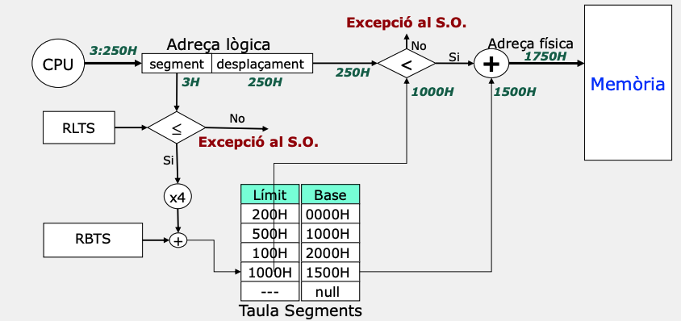
Problemes de la segmentació
La segmentació és molt semblant amb l’esquema de gestió de Memòria per particions múltiples de mida variable. Té els mateixos problemes que aquest esquema.
Fragmentació Externa. L’espai de memòria física d’un segment ha de ser contigu en memòria i pot provocar fragmentació externa. Imaginem que tenim 3 segments de 1KB, 2KB i 2KB. La nostra taula de segments ens portarà a 3 zones de memòria física de 1KB, 2KB i 2KB. Assumirem que ambdos segments de 2KB no estan utilitzats, per tant, tenim 4KB de memòria lliure. No obstant això, no podem allotjar un segment de 3KB, ja que no hi ha cap regió contigua de 3KB.
Requereix mètodes de compactació de la Memòria. Per gestionar la fragmentació, es poden utilitzar mètodes de compactació que moguin els segments i redueixin la fragmentació. Es poden moure segments després d’un ús continuat o quan es detecta que hi ha fragmentació.
Polítiques de selecció per ubicar els segments en Memòria física: S’han d’escollir algoritmes eficients per ubicar els segments a la memòria física, com ara First-Fit o Best-Fit.
Avantatges de la segmentació
Absència de Fragmentació Interna: Cada segment pot tenir la seva pròpia mida, i això significa que no hi ha fragmentació interna dins dels segments mateixos. Cada segment utilitza exactament l’espai que necessita sense desperdiciar memòria.
Flexibilitat per compartir i protegir segments: Cada segment pot ser protegit individualment i compartir-se amb altres processos si és necessari. Aquesta capacitat de gestionar diferents parts de la memòria amb polítiques específiques proporciona un alt grau de control i eficàcia en la gestió del sistema.
Per exemple, un segment de codi pot ser compartit per diferents processos, mentre que un segment de dades pot ser protegit per un procés específic.
Segmentació Paginada
La segmentació paginada proporciona suport directe a les regions d’un procés i la paginació permet un millor aprofitament de la Memòria i una base per construir un esquema de Memòria virtual.
Observacions
- La segmentació paginada intenta reduir la fragmentació externa associada als segments i millorar l’eficiència de la Memòria.
- Cada segment està paginat, de manera que la Memòria física associada amb un segment no ha d’estar contigua a la Memòria.
- Descomposició adreça lògica:
- Segment + Desplaçament 1 (Pàgina + Desplaçament 2)
- Pàgina: Entrada a la taula de pàgines del segment.
- Desplaçament 2: Desplaçament de la cel·la a la Memòria física.
- Segment + Desplaçament 1 (Pàgina + Desplaçament 2)
Hardware segmentació-paginada
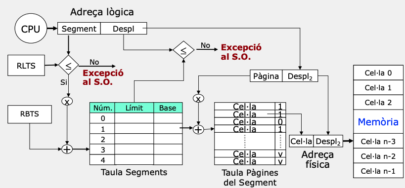
Observació
Aquest model és molt útil per entendre conceptes, però no és el que implementen els sistemes operatius moderns com Linux o Windows.
Problema 2: Segmentació paginada
Dissenyar un sistema de segmentació paginada amb les característiques següents:
- Memòria física: 8MB.
- Número màxim de segments per procés: 16.
- Mida màxima segment: 1MB.
- Mida pagina: 4KB.
Calcular:
- Esquema de traducció.
- Taula de segments per un procés amb:
- Codi: 128KB, Dades: 4KB, Dades: 256B, Pila 16KB
- Calcular l’adreça física per 1:01100h si les entrades a la taula de segments del procés anterior són: 0h, 1000h, 2000h i 1500h.
Problema 2: Càlculs
Nº de segments: 16 segments per procés. Per tant, necessitem 4 bits per representar el número de segment (\(2^4\)).
Mida màxima segment: 1MB. Per tant, necessitem 20 bits per representar el desplaçament dins del segment (\(2^{20}\)).
Mida de la pàgina: 4KB. Per tant, necessitem 12 bits per representar el desplaçament dins de la pàgina (\(2^{12}\)).
Adreça lògica: Segment (4 bits) + Desplaçament 1 (20 bits).
Adreça lògica: Segment (4 bits) + Pàgina (8 bits) + Desplaçament 2 (12 bits).
Adreça física: Cel·la (11 bits) + Desplaçament 2 (12 bits). La mida de la Memòria Principal és de 8MB, per tant, necessitem 23 bits per representar el número de cel·la (\(2^{23}\)). La raó entre la mida de la Memòria Principal i la mida de la pàgina és: (\(\dfrac{2^{23}}{2^{12}}=2^{11}\)).
Problema 2: Esquema de Traducció
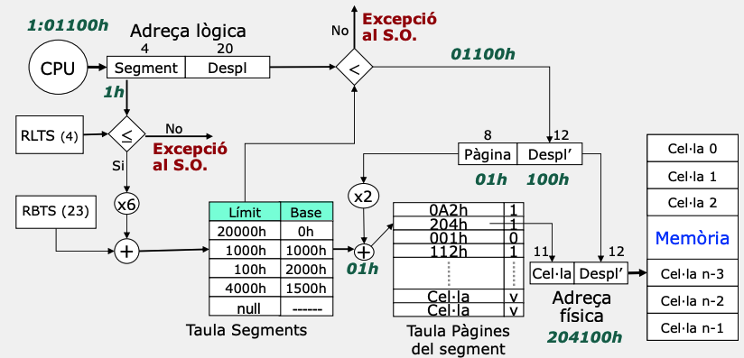
Paginació segmentada
La paginació segmentada primer divideix en taula de pàgines i després cada pàgina es divideix en segments.
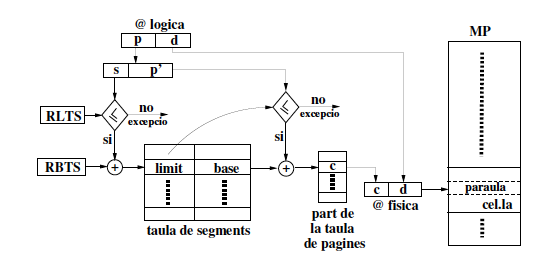En l’únic cas que pot ser eficient es quan tenim processos molt grans
Exercicis
Enuciat (I)
Disposem d’un sistema de gestió de memòria on la mida de la pàgina és de 512 bytes, la de Memòria és de 2 MB, i la d’una paraula 1 byte. Un procés consta de com a molt 4 segments. La mida màxima d’un segment és 4K. Totes les taules s’implementen en memòria principal. Donats els dos processos següents:
| P1 | P2 | |
|---|---|---|
| \(P_{A}\) (512 bytes) | X | X |
| \(P_{B}\) (2560 bytes) | X | |
| \(Dades_{L}\) (1024 bytes) | X | X |
Les X’s en la taula indiquen quins procediments i dades estan assignats a cada procés. Una fila amb dos o més X’s indica que el procediment o dades estan compartits. A més, cada procés està format per un segment d’stack de 1 KB. Les primeres 50 primeres cel·les estan ocupades, i de les restants, les parells també ho estan.
Enuciat (II)
Doneu un exemple, sempre que sigui possible, que mostri quina és la informació i la seva mida (en bytes), que ha de guardar el s.o. per tal de poder fer la traducció d’adreces dels dos processos quan aquests executen dins de la CPU pels sistemes de gestió de memòria següents:
- Paginació (3 punts)
- Segmentació. (3 punts)
- Segmentació Paginada (4 punts)
Paginació (I)
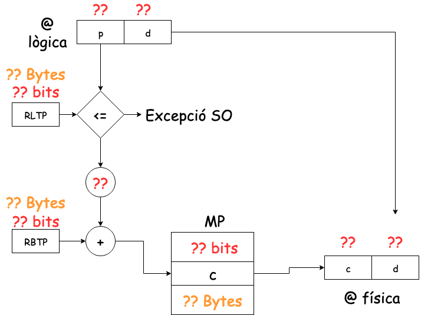
Paginació (II)
Pàgines per procés:
| P1 | P2 | |
|---|---|---|
| \(P_{A}\) (512 bytes) | ? | ? |
| \(P_{B}\) (2560 bytes) | ? | ? |
| \(Dades_{L}\) (1024 bytes) | ? | ? |
| Stack (1024 bytes) | ? | ? |
| TOTAL | ? | ? |
Paginació (III)
Pàgines per proés:
| P1 | P2 | |
|---|---|---|
| \(P_{A}\) (512 bytes) | 1 | 1 |
| \(P_{B}\) (2560 bytes) | 5 | - |
| \(Dades_{L}\) (1024 bytes) | 2 | 2 |
| Stack (1024 bytes) | 2 | 2 |
| TOTAL | 10 | 5 |
Esquema de traducció (Paginació)
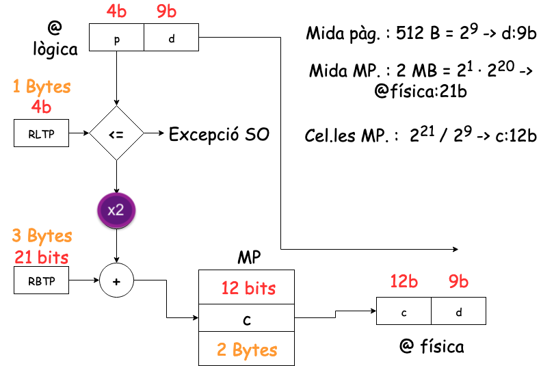
Taules de pàgines (Paginació)
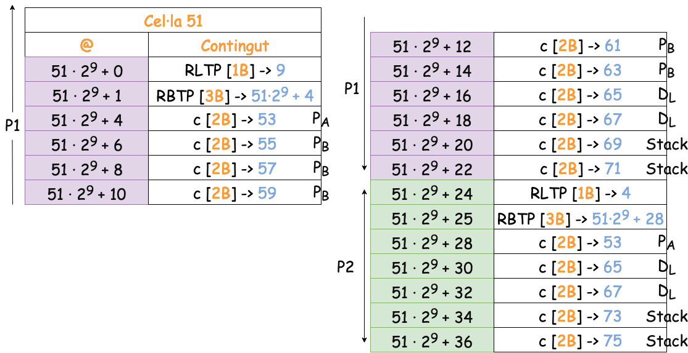
Segmentació (I)
No es pot aplicar la segmentació
- La segmentació requereix totes les pàgines d’un segment en una regió contigua de Memòria.
- El procediment B, les dades i la pila ocupen més d’una pàgina (5,2 i 2 respectivament).
- No hi ha més d’una cel·la contigua lliure; ja que les cel·les, parells estan ocupades.
Segmentació Paginada (Esquema)
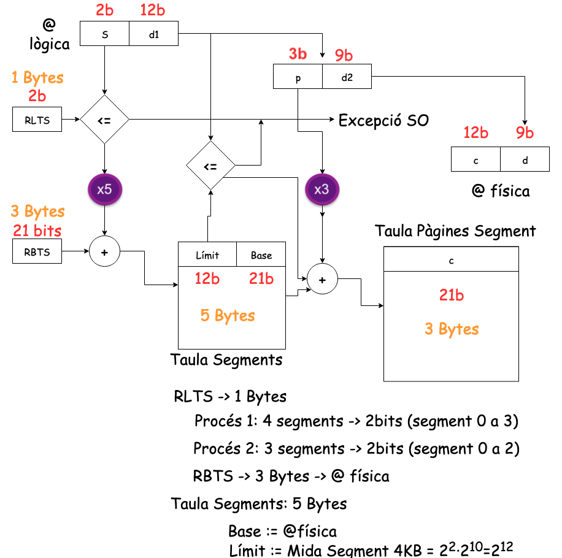
Segmentació Paginada (pàgines i segments)
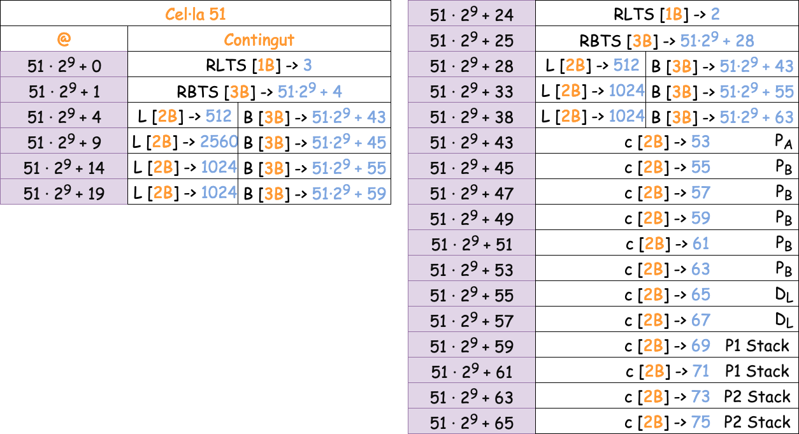
Reflexió final (I)
En els sistemes operatius moderns (Linux, Windows, macOS), la gestió de la memòria es basa principalment en paginació amb suport de la MMU, TLB i taules de pàgines multinivell. Aquest és el mecanisme central de traducció d’adreces en arquitectures modernes com x86-64 i ARM.
La segmentació clàssica i la segmentació paginada són models teòrics o històrics que permeten entendre els fonaments de la gestió de la memòria, però ja no s’utilitzen com a mecanisme general en arquitectures actuals.
Reflexió final (II)
Tot i això, Linux sí que utilitza segmentació en casos puntuals, especialment: - per accedir a informació específica de cada procés o fil (FS/GS base, TLS), - en modes de compatibilitat de 32 bits, - i en fases inicials del procés d’arrencada.
Properes parts
Part 2 — Sistemes moderns: el cas del Kernel de Linux
Traducció d’adreces real, TLB, multilevel paging, ASLR, estructura/proc/<pid>/maps, ELF,mmap(), COW, i assignació física (buddy allocator).Part 3 — Memòria virtual
Demand paging, page faults, swapping, working set, thrashing, polítiques de reemplaçament i gestió dinàmica de la memòria virtual.

Unitat 6 · Sistemes Operatius (SO) 🏠